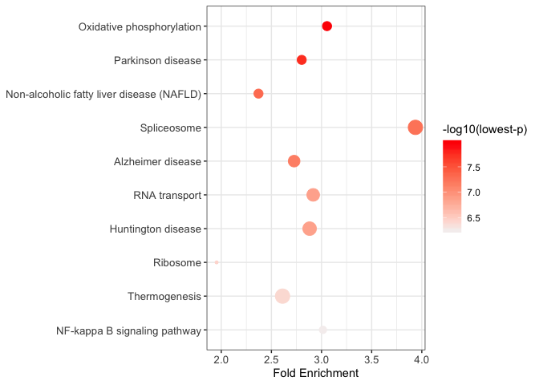

Overview
pathfindR is a tool for enrichment analysis via active subnetworks. The package also offers functionalities to cluster the enriched terms and identify representative terms in each cluster, to score the enriched terms per sample and to visualize analysis results.
The functionalities of pathfindR is described in detail in Ulgen E, Ozisik O, Sezerman OU. 2019. pathfindR: An R Package for Comprehensive Identification of Enriched Pathways in Omics Data Through Active Subnetworks. Front. Genet. https://doi.org/10.3389/fgene.2019.00858
For detailed documentation, see pathfindR’s website or the pathfindR wiki.
Installation
You can install the released version of pathfindR from CRAN via:
or via pak (this might be preferable given pathfindR’s Bioconductor dependencies):
And the development version from GitHub via pak:
IMPORTANT NOTE For the active subnetwork search component to work, the user must have Java (>= 8.0) installed and path/to/java must be in the PATH environment variable.
We also have docker images available on Docker Hub and on GitHub:
Enrichment Analysis with pathfindR

This workflow takes in a data frame consisting of “gene symbols”, “change values” (optional) and “associated p values”:
| Gene_symbol | logFC | FDR_p |
|---|---|---|
| FAM110A | -0.69 | 3.4e-06 |
| RNASE2 | 1.35 | 1.0e-05 |
| S100A8 | 1.54 | 3.5e-05 |
| S100A9 | 1.03 | 2.3e-04 |
After input testing, any gene symbol that is not in the chosen protein-protein interaction network (PIN) is converted to an alias symbol if there is an alias that is in the PIN. After mapping the input genes with the associated p values onto the PIN, active subnetwork search is performed. The resulting active subnetworks are then filtered based on their scores and the number of significant genes they contain.
An active subnetwork can be defined as a group of interconnected genes in a protein-protein interaction network (PIN) that predominantly consists of significantly altered genes. In other words, active subnetworks define distinct disease-associated sets of interacting genes, whether discovered through the original analysis or discovered because of being in interaction with a significant gene.
These filtered list of active subnetworks are then used for enrichment analyses, i.e. using the genes in each of the active subnetworks, the significantly enriched terms (pathways/gene sets) are identified. Enriched terms with adjusted p values larger than the given threshold are discarded and the lowest adjusted p value (over all active subnetworks) for each term is kept. This process of active subnetwork search + enrichment analyses is repeated for a selected number of iterations, performed in parallel. Over all iterations, the lowest and the highest adjusted-p values, as well as number of occurrences over all iterations are reported for each significantly enriched term.
This workflow can be run using the function run_pathfindR():
This wrapper function performs the active-subnetwork-oriented enrichment analysis and returns a data frame of enriched terms (as well as visualization of enriched terms and an HTML report):
| ID | Term_Description | Fold_Enrichment | occurrence | lowest_p | highest_p | Up_regulated | Down_regulated |
|---|---|---|---|---|---|---|---|
| hsa03040 | Spliceosome | 3.0975 | 10 | 1.1e-09 | 3.7e-09 | NDUFA1, NDUFB3, UQCRQ | SNRPB, SF3B2 |
| hsa00190 | Oxidative phosphorylation | 2.5240 | 10 | 2.9e-08 | 2.9e-08 | COX7C | UBE2G1, VDAC1 |
| hsa05012 | Parkinson disease | 2.3188 | 10 | 4.9e-08 | 4.9e-08 | DDIT3, NDUFA1 | UBE2G1, VDAC1, SLC25A5 |

Some useful arguments are:
# change the output directory
output_df <- run_pathfindR(input_df, output_dir = "/top/secret/results")
# change the gene sets used for analysis (default = "KEGG")
output_df <- run_pathfindR(input_df, gene_sets = "GO-MF")
# change the PIN for active subnetwork search (default = Biogrid)
output_df <- run_pathfindR(input_df, pin_name_path = "IntAct")
# or use an external PIN of your choice
output_df <- run_pathfindR(input_df, pin_name_path = "/path/to/myPIN.sif")
# change the number of iterations (default = 10)
output_df <- run_pathfindR(input_df, iterations = 25)
# report the non-significant active subnetwork genes (for later analyses)
output_df <- run_pathfindR(input_df, list_active_snw_genes = TRUE)The available PINs are “Biogrid”, “STRING”, “GeneMania”, “IntAct”, “KEGG” and “mmu_STRING”. The available gene sets are “KEGG”, “Reactome”, “BioCarta”, “GO-All”, “GO-BP”, “GO-CC”, “GO-MF”, and “mmu_KEGG”. You also use a custom PIN (see ?return_pin_path) or a custom gene set (see ?fetch_gene_set)
As of the latest dev version, pathfindR offers utility functions for obtaining organism-specific PIN data (for now, only BioGRID PINs) and organism-specific gene sets (KEGG and Reactome) data via
get_pin_file()andget_gene_sets_list(), respectively.
Clustering of the Enriched Terms
 The wrapper function for this workflow is
The wrapper function for this workflow is cluster_enriched_terms().
This workflow first calculates the pairwise kappa statistics between the enriched terms. The function then performs hierarchical clustering (by default), automatically determines the optimal number of clusters by maximizing the average silhouette width and returns a data frame with cluster assignments.
# default settings
clustered_df <- cluster_enriched_terms(output_df)
# display the heatmap of hierarchical clustering
clustered_df <- cluster_enriched_terms(output_df, plot_hmap = TRUE)
# display the dendrogram and automatically-determined clusters
clustered_df <- cluster_enriched_terms(output_df, plot_dend = TRUE)
# change agglomeration method (default = "average") for hierarchical clustering
clustered_df <- cluster_enriched_terms(output_df, clu_method = "centroid")Alternatively, the fuzzy clustering method (as described in Huang DW, Sherman BT, Tan Q, et al. The DAVID Gene Functional Classification Tool: a novel biological module-centric algorithm to functionally analyze large gene lists. Genome Biol. 2007;8(9):R183.) can be used:
Visualization of Enrichment Results
Term-Gene Heatmap
The function term_gene_heatmap() can be utilized to visualize the heatmap of enriched terms by the involved input genes. This heatmap allows visual identification of the input genes involved in the enriched terms, as well as the common or distinct genes between different terms. If the input data frame (same as in run_pathfindR()) is supplied, the tile colors indicate the change values.

Term-Gene Graph
The function term_gene_graph() (adapted from the Gene-Concept network visualization by the R package enrichplot) can be utilized to visualize which significant genes are involved in the enriched terms. The function creates the term-gene graph, displaying the connections between genes and biological terms (enriched pathways or gene sets). This allows for the investigation of multiple terms to which significant genes are related. The graph also enables determination of the degree of overlap between the enriched terms by identifying shared and/or distinct significant genes.

UpSet Plot
UpSet plots are plots of the intersections of sets as a matrix. UpSet_plot() creates a ggplot object of an UpSet plot where the x-axis is the UpSet plot of intersections of enriched terms and the main plot is a bar plot of the number of genes in the corresponding intersections (default). If genes_df is provided, then the main plot displays the boxplots of change values of the genes within the corresponding intersections.

Per Sample Enriched Term Scores

The function score_terms() can be used to calculate the agglomerated z score of each enriched term per sample. This allows the user to individually examine the scores and infer how a term is overall altered (activated or repressed) in a given sample or a group of samples.